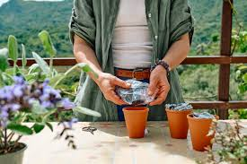

Importancia del Uso Sostenible
El uso sostenible de plantas medicinales asegura que estas plantas estarán disponibles para futuras generaciones. La preservación de la biodiversidad es clave para mantener el equilibrio ecológico y evitar la extinción de especies valiosas. Además, el uso responsable permite a las comunidades locales seguir beneficiándose de los recursos naturales a largo plazo.
- Preservación de especies: Al utilizar técnicas de recolección sostenibles, se protege la flora medicinal y se evita la pérdida de especies.
- Evitar la sobreexplotación: El uso controlado y regulado de plantas evita la sobreexplotación, garantizando la disponibilidad continua de estos recursos.
- Promoción de la reforestación: Plantar y cultivar especies medicinales en riesgo contribuye a la recuperación de los ecosistemas.
- Educación y conciencia: Fomentar el conocimiento sobre la importancia del uso sostenible ayuda a proteger el medio ambiente.
Ejemplos de Uso Sostenible
Aquí se presentan algunas prácticas sostenibles que pueden aplicarse al uso de plantas medicinales:
| Práctica | Beneficio |
|---|---|
| Recolección controlada: | La recolección limitada a ciertas cantidades y tiempos garantiza la regeneración natural de las plantas. |
| Reforestación activa: | Plantar nuevas especies en áreas deforestadas ayuda a recuperar el equilibrio ecológico. |
| Usos alternativos: | Promover el uso de plantas alternativas menos explotadas reduce la presión sobre especies en riesgo. |
| Educación comunitaria: | Capacitar a las comunidades sobre el uso sostenible asegura la conservación a largo plazo de los recursos. |